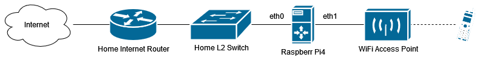
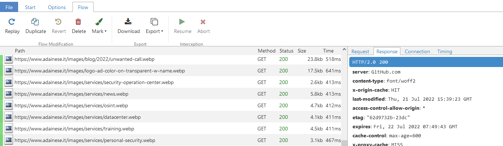
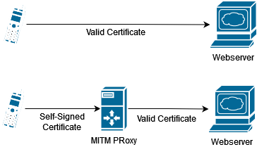
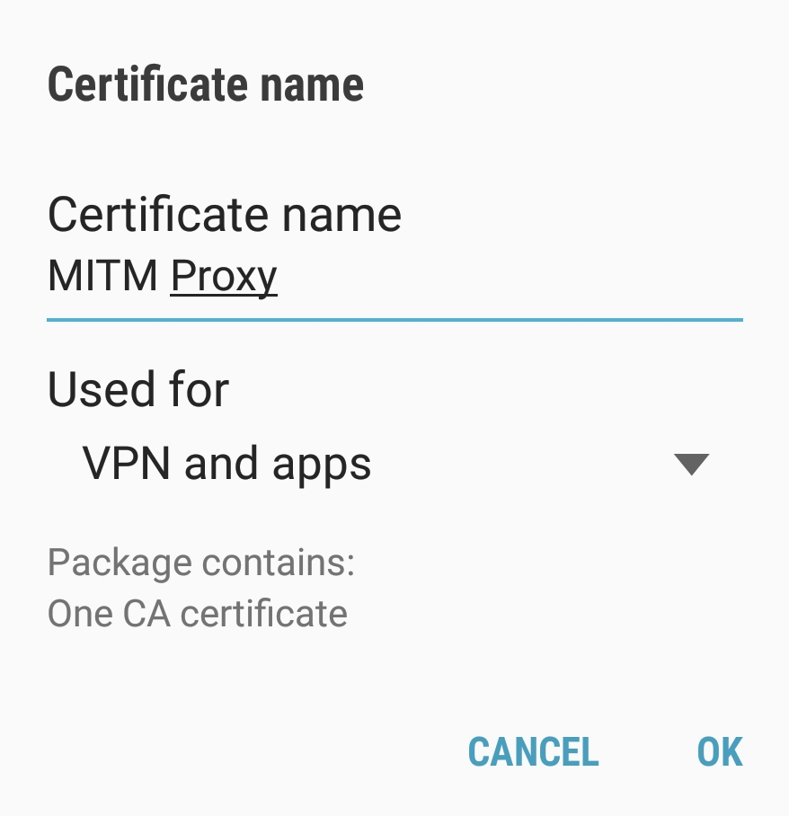

Building an IoT testing lab¶

As private individuals we are using a lot of consumer IoT devices: almost any standard home equipment can now be remotely controlled by a specific application installed on a smartphone.
The question is: how much can we trust those IoT devices? In which way our digital security and privacy is affected?
To answer those questions, we are building a small and cheap IoT testing lab.
Design¶
The design is simple: we want a flexible device (Linux based) to intercept any Ethernet/IP traffic emitted by the IoT device.

The Linux device will provide an Internet connection to the IoT device dumping all traffic data and metadata and intercepting encrypted traffic also.
Bill of material (BOM)¶
For our testing lab we are using:
- Raspberry Pi 4 8 GB RAM
- Raspberry Pi 4 case and accessories
- microSD Samsung Evo plus 128 GB
- Ethernet 10/100/1000 USB 3.0 adapter
- D-Link DWL-G730AP
- Logitech K360 Wireless keyboard
- Kali Linux for ARM
- NextDNS account
The Kali Linux ARM image can be dumped to the microSD using Raspberry Pi Imager.
I'm using an old portable Wireless access point I bought years ago. I guess this one works too in "Access Point" mode.
First boot¶
After the first boot, we can start to configure our Raspberry Pi. By default SSH is enabled on Kali Linux:
We need to install some packages required in the next steps:
sudo apt-get update
sudo apt-get dist-upgrade
sudo apt-get autoremove
sudo apt-get install iptables-persistent dnsmasq
sudo mkdir -p /var/log/analysis/zeek/
Finally, maybe we want to adjust the keyboard and timezone:
We want to disable embedded Bluetooth and wireless adapters:
sudo echo "dtoverlay=disable-bt" >> /boot/config.txt
sudo echo "dtoverlay=disable-wifi" >> /boot/config.txt
A reboot is suggested to apply all the above configurations.
Network configuration¶
We expect our Pi acts as a router, so we need to configure two network interfaces. The first one is configured by default with DHCP, the second one must be configured:
sudo cat << EOF > /etc/network/interfaces.d/eth0
auto eth0
allow-hotplug eth0
iface eth0 inet dhcp
EOF
sudo cat << EOF > /etc/network/interfaces.d/eth1
auto eth1
allow-hotplug eth1
iface eth1 inet static
address 192.168.0.1
netmask 255.255.255.0
EOF
To enable the Pi to act as a router we have to enable IPv4 forwarding. Edit /etc/sysctl.conf and set:
At the end reload sysctl settings:
To make the Internet reachable from devices attached to eth1 we need to enable NAT. Moreover we want to enable additional tricks to force DNS traffic and log requests coming from eth1:
sudo cat << EOF > /etc/iptables/rules.v4
*nat
:PREROUTING ACCEPT [0:0]
:INPUT ACCEPT [0:0]
:OUTPUT ACCEPT [0:0]
:POSTROUTING ACCEPT [0:0]
-A PREROUTING ! -d 192.168.0.1/32 -p udp -m udp --dport 53 -j MARK --set-xmark 0x1/0xffffffff
-A PREROUTING -m mark --mark 0x1 -j LOG --log-prefix "iptables: direct_dns "
-A PREROUTING -m mark --mark 0x1 -j DNAT --to-destination 192.168.0.1
-A POSTROUTING -o eth0 -j MASQUERADE
COMMIT
*filter
:INPUT DROP [0:0]
:FORWARD ACCEPT [0:0]
:OUTPUT ACCEPT [0:0]
:Services - [0:0]
-A INPUT -i lo -j ACCEPT
-A INPUT -i eth1 -j ACCEPT
-A INPUT -m state --state RELATED,ESTABLISHED -j ACCEPT
-A INPUT -m state --state NEW -j Services
-A FORWARD -i eth1 -m state --state NEW -j MARK --set-xmark 0x2/0xffffffff
-A FORWARD -m mark --mark 0x2 -j LOG --log-prefix "iptables: new_conn "
-A Services -p tcp -m tcp --dport 22 -j ACCEPT
-A Services -p tcp -m tcp --dport 9090 -j ACCEPT
COMMIT
EOF
We can reload the firewall with:
Finally, we want to make iptables log on a dedicated file:
sudo cat << EOF > /etc/rsyslog.d/iptables.conf
:msg, regex, "iptables: " -/var/log/analysis/iptables.log
EOF
We need to restart rsyslog:
DNS and DHCP server¶
To intercept and track DNS requests we want to use DNSMasq: it can act as DNS and DHCP server. Be sure DNSMasq load external configurations file editing /etc/dnsmasq.conf:
We can configure DHCP as follows:
sudo cat << EOF > /etc/dnsmasq.d/network.conf
interface=eth1
dhcp-range=192.168.0.50,192.168.0.150,24h
EOF
We want to forward the DNS requests to NextDNS. Be sure you are using your CPE otherwise, you won't see DNS requests on your NextDNS dashboard:
sudo cat << EOF > /etc/dnsmasq.d/nextdns.conf
port=53
no-resolv
no-hosts
bogus-priv
strict-order
server=45.90.30.0
server=45.90.28.0
add-cpe-id=aaaaaa
EOF
We want DNSMasq to log all requests on a specific file:
sudo cat << EOF > /etc/dnsmasq.d/logging.conf
# Log each DNS query
log-queries
# Log lots of extra information about DHCP
log-dhcp
# Log into a dedicated files
log-facility=/var/log/analysis/dnsmasq.log
EOF
Finally, we need to restart DNSMasq:
Full traffic capture¶
Even if it won't be easy to analyze captured packets, it's still useful to have them so we can analyze specific conversations. We are configuring a small service to capture any packets entering from eth1:
sudo cat << EOF > /etc/systemd/system/tcpdump.service
[Unit]
After=network.target
[Service]
Restart=always
RestartSec=30
Environment="TCPDUMP_FORMAT=%%Y%%m%%d-%%H:%%M:%%S"
ExecStartPre=/bin/mkdir -p /var/log/analysis
ExecStart=/usr/bin/tcpdump -G 3600 -i eth1 -w "/var/log/analysis/tcpdump-eth1-${TCPDUMP_FORMAT}.pcap"
ExecStop=/bin/kill -s SIGINT $MAINPID
[Install]
WantedBy=multi-user.target
EOF
We need to enable and start the new service:
Light traffic capture (metadata)¶
We need a faster way to understand what the testing device is doing.
Zeek can help to capture traffic metadata in a human-readable format. Zeek is not available on Kali Linux for Raspberry Pi, so we need to compile it. The process requires a few hours:
sudo apt-get install cmake flex bison libpcap-dev libssl-dev python3 python3-dev swig zlib1g-dev
sudo apt-get install python3-git python3-semantic-version exim4
git clone --recursive https://github.com/zeek/zeek
cd zeek
./configure
make
sudo make install
We want to install Zeek auxiliary programs also:
Maybe we want to include the Zeek binary directory in the path:
To configure Zeek we need to edit /usr/local/zeek/etc/node.cfg:
We also want Zeek log on the same directory we used before. Edit also /usr/local/zeek/etc/zeekctl.cfg and set:
Finally, we are ready to update Zeek installation/configuration:
We can manually start Zeek or configure a SystemD service:
sudo cat << EOF > /etc/systemd/system/zeek.service
[Unit]
Description=zeek network analysis engine
[Service]
Type=forking
PIDFIle=/var/run/zeek.pid
ExecStart=/usr/local/zeek/bin/zeekctl start
ExecStop=/usr/local/zeek/bin/zeekctl stop
[Install]
WantedBy=multi-user.target
EOF
And enable it during the boot:
MITM Proxy¶
We are using MITM Proxy to analyze encrypted HTTP connections. We can install it with:
We can configure MITM Proxy as a system service:
sudo cat << EOF > /etc/systemd/system/mitmproxy.service
[Unit]
Description=MITMProxy
[Service]
Type=simple
ExecStart=/usr/bin/mitmweb --mode transparent --web-port 9090 --web-host 0.0.0.0 --no-web-open-browser
StandardOutput=file:/var/log/analysis/mitmproxy.log
StandardError=file:/var/log/analysis/mitmproxy.log
[Install]
WantedBy=multi-user.target
EOF
And we want to start it on boot:
To intercept the traffic we need to NAT (REDIRECT) HTTP and HTTPS connections to the port used by MITM Proxy (default is 8080), so the traffic can be intercepted:
sudo iptables -t nat -A PREROUTING -i eth1 -p tcp --dport 80 -m comment --comment "mitmproxy" -j REDIRECT --to-port 8080
sudo iptables -t nat -A PREROUTING -i eth1 -p tcp --dport 443 -m comment --comment "mitmproxy" -j REDIRECT --to-port 8080
Because we need to activate and deactivate MITM Proxy traffic inspection, we can use a simple script:
#!/bin/bash
function disable() {
iptables -t nat -S | grep mitmproxy | cut -d" " -f2- | xargs -rL1 iptables -t nat -D
}
function enable() {
disable
iptables -t nat -A PREROUTING -p tcp --dport 80 -m comment --comment "mitmproxy" -j REDIRECT --to-port 8080
iptables -t nat -A PREROUTING -p tcp --dport 443 -m comment --comment "mitmproxy" -j REDIRECT --to-port 8080
}
case $1 in
enable)
enable
;;
disable)
disable
;;
*)
echo "Use $0 enable|disable"
exit 1
;;
esac
We can activate and deactivate traffic interception with:
MITM Proxy web interface is available on port 9090 by default.

Traffic interception¶
Once traffic interception is activated, HTTPS connections will be broken into two parts:

The first diagram shows non-intercepted HTTPS connections: in this case, the client gets a valid signed certificate.
The second diagram shows HTTPS connections intercepted by MITM Proxy: the client gets an invalid self-signed certificate by the MITM Proxy server.
We have three different scenarios:
- the application is not validating certificates, and MITM Proxy can intercept the traffic.
- the application is validating certificates and certificate pinning is not configured in the application.
- the application is validating certificates and certificate pinning is configured in the application.
In the second scenario, we can enable the traffic interception by installing the MITM Proxy certificate into the device and trusting it. From the device open http://mitm.it and install the self-signed certificate.

In the third scenario the application is validating a specific certificate so even if the MITM Proxy certificate is trusted, the application recognizes a MITM attack:
192.168.0.126:34170: Client TLS handshake failed. The client may not trust the proxy's certificate for www.google.com (OpenSSL Error([('SSL routines', 'ssl3_read_bytes', 'sslv3 alert certificate unknown')]))
To bypass certificate pinning, see the post about Frida.
Log rotation¶
To keep the system clean we rotate logs:
sudo cat << EOF > /etc/logrotate.d/analysis
/var/log/analysis/iptables.log {
daily
rotate 7
nocompress
missingok
notifempty
dateext
}
/var/log/analysis/dnsmasq.log {
daily
rotate 7
nocompress
missingok
notifempty
dateext
}
/var/log/analysis/tcpdump {
daily
rotate 0
ifempty
lastaction
/usr/bin/find /var/log/analysis/ -name "tcpdump-*" -mtime +7 -delete
endscript
}
EOF
Next logrotate executions will clean obsolete files.
Clean logs¶
Before and after testing an IoT device and its related apps, we probably want to purge old log files. A short script can help to automate this task:
sudo cat << EOF > /root/clean.sh
#!/bin/bash
NEXT_DNS_PROFILE=aaaaaa
NEXT_DNS_APIKEY=a8f4e42e896ff37f181e3e8a42a9737e1423d8e7
find /var/log/analysis -type f -exec rm -f {} \;
rm -rf /var/log/analysis/zeek/2*
systemctl restart tcpdump
systemctl restart dnsmasq
systemctl restart rsyslog
systemctl restart mitmproxy
curl -X "DELETE" --header "X-Api-Key: ${NEXT_DNS_APIKEY}" https://api.nextdns.io/profiles/${NEXT_DNS_PROFILE}/logs
EOF
Replace the two parameters with your data and run it:
Conclusions¶
We built a small and cheap lab to test consumer IoT devices. But the same tools we used can be used in a Threat Hunting scenario or during network analysis (performance, troubleshooting, whatever). Learning Linux means having an invaluable toolkit ready to be used in complex analysis.
We are learning how to use this setup in dedicated posts.